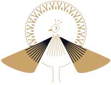
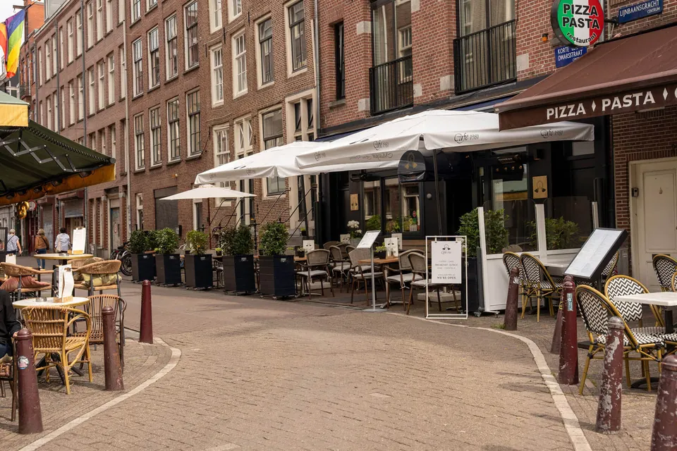

Café-brasserie · Leidseplein, Ámsterdam
Eggs Royale al amanecer.
Un café-brasserie en una calle tranquila entre el Rijksmuseum y Leidseplein. Desayunos y almuerzos desde las 8:00, cócteles y cenas desde las 16:30.

Dos cafés en un mismo día. Mañanas luminosas con huevos frescos y buen café, noches doradas con cócteles en la barra. Hospitalidad clásica a unos pasos de la plaza más animada de Ámsterdam, en una de sus calles más tranquilas.
Una terraza tranquila en pleno centro.
Leidseplein está a la vuelta de la esquina, pero nuestra calle sigue siendo tranquila. Disfruta del sol de la mañana en la terraza, bajo las sombrillas blancas, o vuelve después de los museos a tomar un cóctel en la barra.
- Leidseplein2 min
- Rijksmuseum5 min
- Vondelpark8 min

Lo que dicen nuestros clientes
- 5287
- 440
- 314
- 27
- 17
“Great little find for a classic breakfast feast.”
“Welcomed on arrival with a smile and positive vibe. […] Eggs Benedict a great classic, well seasoned and silky hollandaise. […] Overall a great experience, highly recommend.”
“Great little cafe.”
“Food was excellent and very well presented. Coffee was also very good. Service was fantastic and the right balance between attentive and leaving us to enjoy our meal. The location is great too. Central but slightly tucked away - great for people watching.”
Entra sin más. No hace falta reservar.
Korte Leidsedwarsstraat 2031017 RB AmsterdamEntre Leidseplein y el Rijksmuseum. Tranvía 1, 2, 5, 7 o 19 hasta Leidseplein.
Preguntas frecuentes
¿Cuál es el horario de Café1981?
Abrimos todos los días de 8:00 a 21:00. Servimos desayunos y almuerzos desde las 8:00; la carta de noche, con cenas y cócteles, empieza a las 16:30.
¿Cómo llego a Café1981?
Estamos en Korte Leidsedwarsstraat 203, 1017 RB Ámsterdam: a 2 minutos a pie de Leidseplein, a 5 del Rijksmuseum y a 8 del Vondelpark. Los tranvías 1, 2, 5, 7 y 19 paran en Leidseplein.
¿Hace falta reservar?
No, entra sin más. Si venís en grupo, escríbenos a Reservations@cafe1981.nl.
¿Qué pido para desayunar?
Nuestros platos de huevos: Eggs Royale con salmón ahumado, Eggs Benedict, Eggs Florentine y la Green Omelette. Los Eggs Benedict, la Green Omelette y nuestras torrijas (French toast) son lo más mencionado en las opiniones de Google.
¿Tenéis opciones vegetarianas?
Sí, todos los días: flatbread de hummus y falafel, la hamburguesa vegetal y bitterballen de verduras, y por la noche currys vegetarianos como saag paneer, aloo matar o dal.
¿Puedo probar comida neerlandesa?
Claro. Pide unas bitterballen con tu bebida y, por la noche, hutspot (puré de patata y zanahoria) con salchicha ahumada rookworst. Nuestros curry bowls de Mayur, con naan recién hecho, también triunfan.
¿Tenéis terraza?
Sí. Nuestra terraza con sombrillas blancas está justo delante del café, en una calle tranquila a la vuelta de Leidseplein.